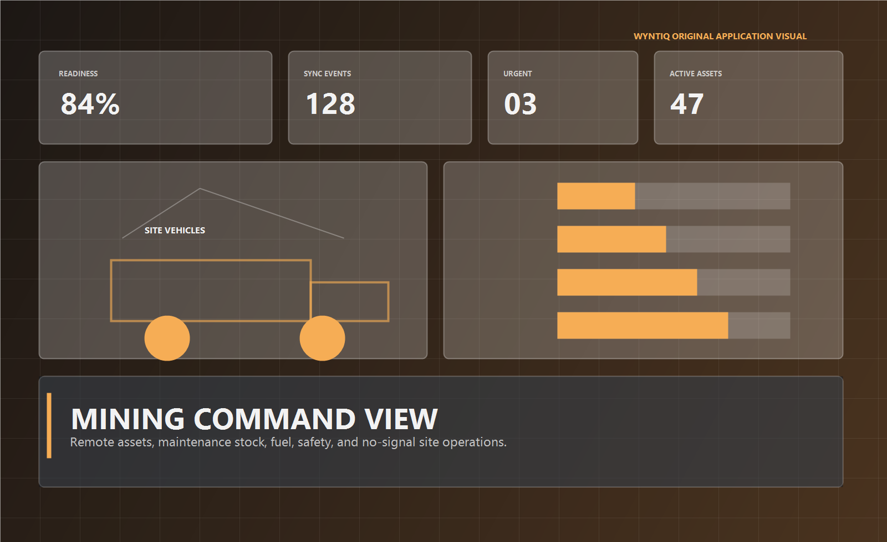

Mesh Diagnostics
When a site drifts, show whether logistics or connectivity caused it.

Remote node health76%
Unsynced local issues11 events
Last routeVehicle relay sync
FallbackUSB export ready
WYNTIQ helps remote operations manage equipment availability, fuel and safety stock, mobile crews, and delayed synchronization across isolated sites.

Mining logistics is not just inventory control. It is uptime control. The product has to reveal what is grounded, what is delayed, and which site is drifting into risk.
Track whether heavy assets are running, waiting for parts, under maintenance, or stranded by logistics delay.
Monitor the supplies that become operationally dangerous when visibility is poor and replenishment takes too long.
Allow site teams to keep recording locally, then merge back to regional command when a path reappears.
Loader down, fuel threshold, delayed repair, crew movement, and stock-in-transit in one controlled command stream.
Replace generic stock-photo marketing with product-shaped story blocks that still remain visually rich.
Mining locations often break cloud assumptions. WYNTIQ is built around that reality instead of pretending it away.
The public sandbox should be easy to enter. The guided trial should be how operational buyers validate their own workflow.